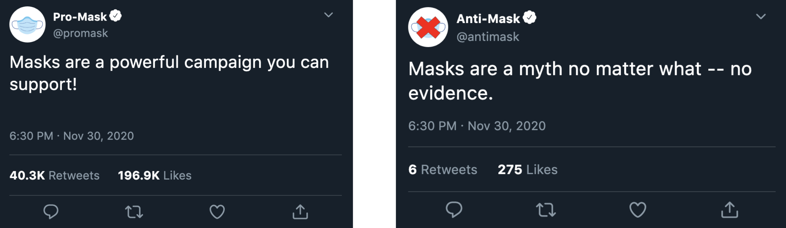

disclaimer: this project is still in progress, and very much confidential in many of the aspects of what i can disclose
to gain a better understanding of how people are influenced, i trained a t5 language model to generate tweets with either pro-mask or anti-mask sentiment. the goal of this trained model was to essentially emulate human thought and behavior as an extension of behavioral analytics.
i created a scraper to collect relevant tweets to use as my dataset for training, and built a self-iterative pipeline to classify sentiment on unseen data which is then used as input for text generation.
an example of the tweets generated from the current state of the model are displayed to the left.
the next steps for this project are to improve model output, and derive thought processes as a concept for a client.